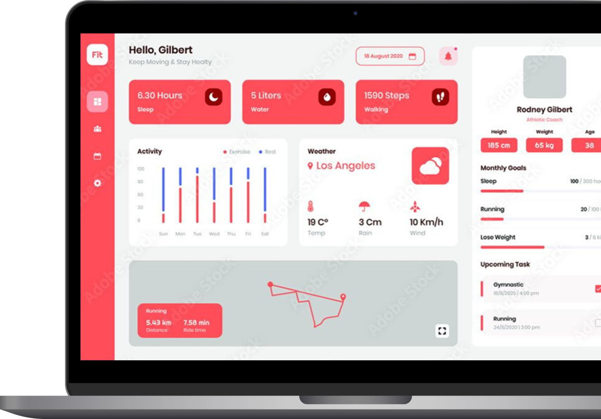

あなたのチャンネル
の"今"が分かる
あなたのYoutubeチャンネルと繋ぐだけで、
次の動画のアイディアが見える。
あなたのチャンネルの成長を加速させる
かんたん分析ツール。
YouTuberの声をもとに作りました！

お悩み
再生回数が伸びない
理由がわからない...
ネタ切れ
次の企画が思いつかない...
分析不能
アナリティクスが見づらい...
ただの作業
動画投稿を続けているだけ...
競合が気になる
なぜあの動画は伸びる？
再生回数が伸びない
理由がわからない...
ネタ切れ
次の企画が思いつかない...
分析不能
アナリティクスが見づらい...
ただの作業
動画投稿を続けているだけ...
競合が気になる
なぜあの動画は伸びる？
サービス概要
01
各数値データを見やすく可視化
再生回数・再生時間・クリック率・視聴者の属性など、バラバラに見ていた指標をひとつの画面に整理。伸びている動画と課題になっている動画を、直感的に把握できます。
02
あなたのジャンルの人気動画が、ひと目でわかる
自分のチャンネルだけでなく、同じジャンルの人気動画もまとめてチェック。いま視聴者がどんな切り口や企画に反応しているのかを把握し、企画づくりのヒントにできます。
03
どのような動画を投稿すべきか提案します
伸びている要素・視聴者属性・競合の傾向などから、次に狙うべきテーマや企画の方向性をレコメンド。思いつきではなく、データに裏付けされた次の一手を考えられます。
DIFFERENCE
他社との違い
専門知識
内容提案
チャンネル分析
見やすさ
金額
分析君
不要
あり
あり
● シンプル
初月無料（月額980円）
他社
必要
なし
なし
▲ 複雑
不明瞭 or 高額
初月無料は今だけ！
HOW TO USE
使い方
たった3ステップで、分析を開始できます。
01
YouTube
アカウントと連携
使い方は簡単！
ボタン一つで安全に接続完了。
02
自動で分析
チャンネルの"今"を徹底解析。
成長を妨げる原因を特定します。
03
「勝てる戦略」を
提示
次にどんな動画を作れば伸びるのか、
明確なアクションプランを提案。
よくある質問
データを見るだけでなく、「次に何をすべきか」という具体的な行動指針が得られる点が異なります。
はい、主要な分析機能はすべて制限なくお試しいただけます。
ございません。どなたでもすぐにご利用可能です。
🎉 初月無料キャンペーン実施中！